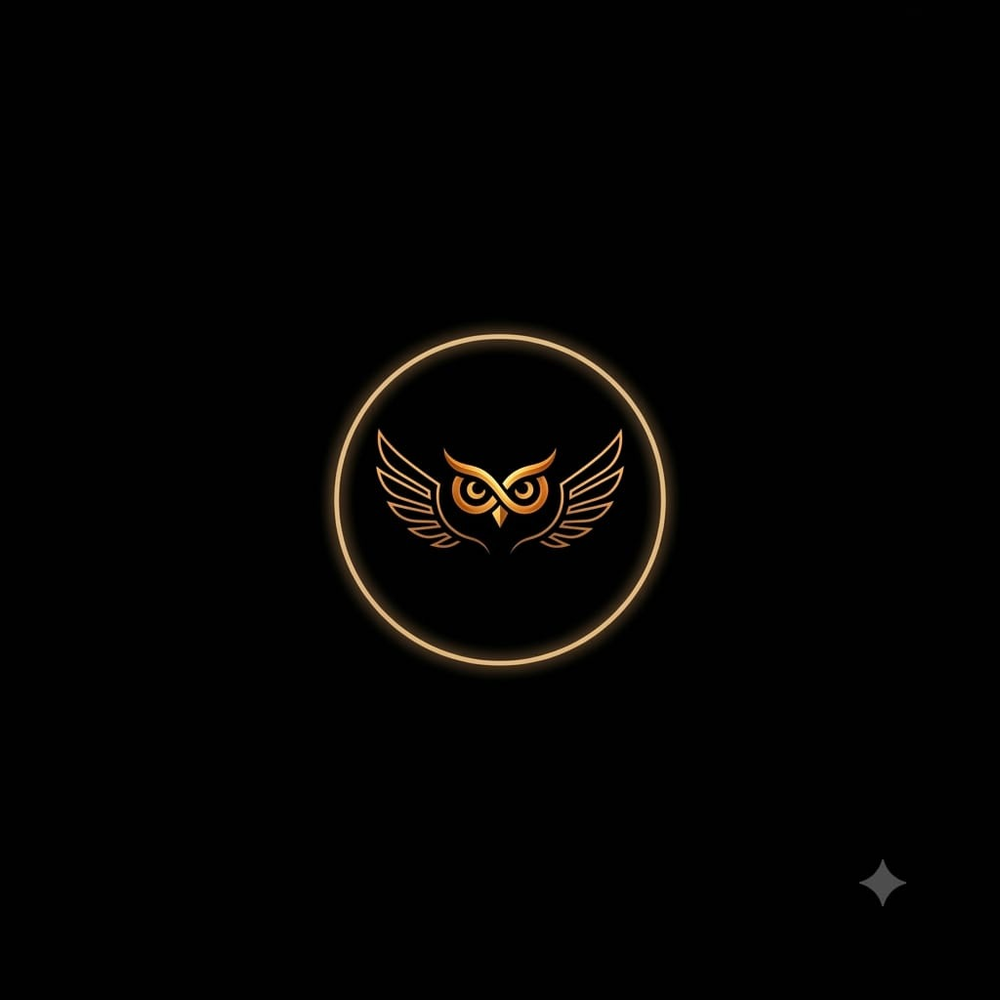

Golden Branding, Owl Buffering, Roster Identities & Story Cascade Architecture
All requested features have been developed, integrated, styled, and verified with zero compilation or TypeScript errors:
The homepage has been refactored to place the golden owl logo in very small size (xs) in the top-center dock, flanked symmetrically by cards linking to primary pages:
Roadmaps, multi-project tracking, and dual-tier progress rollups.
Interactive nested story hierarchy with cascade updates.
Master-detail member roster with cute owl avatars.
Agentic workflows with semantic vector retrieval.
Members can choose from 8 hand-crafted cute owl personas with vector accessories and natural blinking eyes:
| ID | Persona | Accessory | Color Theme |
|---|---|---|---|
| owl-gold | Golden Aegis | Imperial Crown | Amber Gold |
| owl-scholar | Professor Hoot | Scholar Glasses | Emerald Teal |
| owl-cyber | Cyber Athena | Glowing Visor | Cyan Electric Blue |
| owl-wizard | Archmage Talon | Sorcerer Hat & Star | Deep Violet |
| owl-astro | Astro Voyager | Astronaut Helmet | Sky Blue |
| owl-ninja | Shadow Shinobi | Crimson Headband | Charcoal Crimson |
| owl-coder | Binary Byte | Studio Headphones | Magenta Pink |
| owl-spark | Solar Nova | Sparkle Clusters | Warm Sunburst |
Database structure implemented in supabase/schema.sql:
-- Stories table as child of projects
CREATE TABLE IF NOT EXISTS public.stories (
id UUID PRIMARY KEY DEFAULT gen_random_uuid(),
project_id UUID NOT NULL REFERENCES public.projects(id) ON DELETE CASCADE,
title TEXT NOT NULL,
description TEXT DEFAULT '',
status TEXT NOT NULL DEFAULT 'todo' CHECK (status IN ('todo', 'in_progress', 'review', 'done')),
priority TEXT NOT NULL DEFAULT 'medium' CHECK (priority IN ('low', 'medium', 'high', 'urgent')),
due_date DATE,
progress INTEGER NOT NULL DEFAULT 0 CHECK (progress >= 0 AND progress <= 100),
created_at TIMESTAMPTZ NOT NULL DEFAULT timezone('utc'::text, now()),
updated_at TIMESTAMPTZ NOT NULL DEFAULT timezone('utc'::text, now())
);
-- Child link on tasks
ALTER TABLE public.tasks
ADD COLUMN IF NOT EXISTS story_id UUID REFERENCES public.stories(id) ON DELETE CASCADE;| Component | File Path | Role |
|---|---|---|
| CognitiveLogo | frontend/components/CognitiveLogo.tsx | Glowing golden owl emblem (sizes xs to 2xl) |
| OwlLoader | frontend/components/OwlLoader.tsx | Owl-based buffering loader with rotating arc |
| CuteOwlAvatar | frontend/components/CuteOwlAvatar.tsx | 8 cute collectible owl member avatars |
| OwlAvatarPicker | frontend/components/OwlAvatarPicker.tsx | Interactive avatar picker grid modal |
| StoriesPage | frontend/app/projects/[id]/stories/page.tsx | Project stories & tasks hierarchy board |
| Navbar | frontend/components/Navbar.tsx | Top nav with integrated accent palette picker |
Cognitive Workspace • Antigravity AI Engineering • Production Build Passing